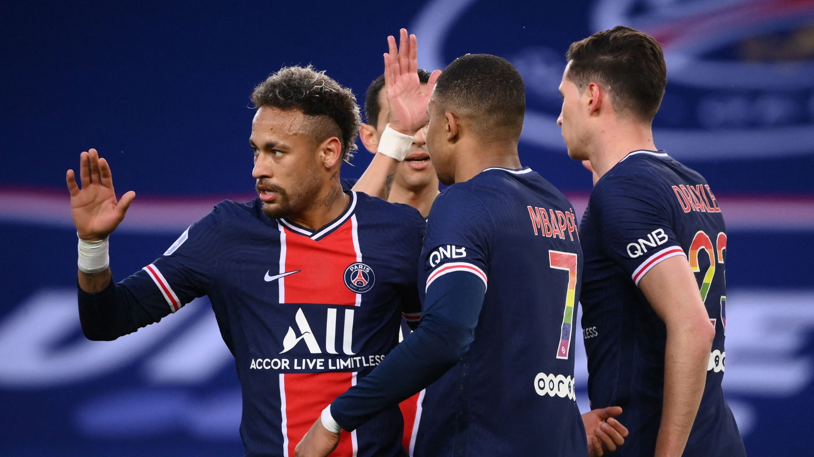

Les joueur
N°30 Lionel Messi
Kylian mbappe
neymar
sergio ramos
keylor navas
achraf hakimi
Wijnaldum
mauro icardi
Donnarumma
angel di maria
marquinhos
marco verrati
presnel kimpembe
MESSI EST MAGIQUE !!!

PSG VS REIMS